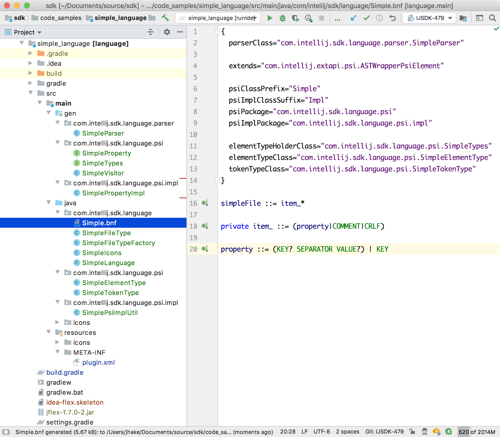

3. Grammar and Parser
In order for the IntelliJ Platform to parse a Simple Language file, tokens and elements must be defined based on IElementType.
The Simple Language grammar must also be defined to generate a parser.
3.1. Define a Token Type
Create SimpleTokenType in the org.intellij.sdk.language.psi package (see the simple_language_plugin code sample) by subclassing IElementType.
// Copyright 2000-2020 JetBrains s.r.o. and other contributors. Use of this source code is governed by the Apache 2.0 license that can be found in the LICENSE file.
package org.intellij.sdk.language.psi;
import com.intellij.psi.tree.IElementType;
import org.intellij.sdk.language.SimpleLanguage;
import org.jetbrains.annotations.*;
public class SimpleTokenType extends IElementType {
public SimpleTokenType(@NotNull @NonNls String debugName) {
super(debugName, SimpleLanguage.INSTANCE);
}
@Override
public String toString() {
return "SimpleTokenType." + super.toString();
}
}
3.2. Define an Element Type
Create the SimpleElementType in the org.intellij.sdk.language.psi package by subclassing IElementType.
// Copyright 2000-2020 JetBrains s.r.o. and other contributors. Use of this source code is governed by the Apache 2.0 license that can be found in the LICENSE file.
package org.intellij.sdk.language.psi;
import com.intellij.psi.tree.IElementType;
import org.intellij.sdk.language.SimpleLanguage;
import org.jetbrains.annotations.NonNls;
import org.jetbrains.annotations.NotNull;
public class SimpleElementType extends IElementType {
public SimpleElementType( @NotNull @NonNls String debugName) {
super(debugName, SimpleLanguage.INSTANCE);
}
}
3.3. Define the Grammar
Define a grammar for the Simple Language in the com/intellij/sdk/language/Simple.bnf file.
{
parserClass="org.intellij.sdk.language.parser.SimpleParser"
extends="com.intellij.extapi.psi.ASTWrapperPsiElement"
psiClassPrefix="Simple"
psiImplClassSuffix="Impl"
psiPackage="org.intellij.sdk.language.psi"
psiImplPackage="org.intellij.sdk.language.psi.impl"
elementTypeHolderClass="org.intellij.sdk.language.psi.SimpleTypes"
elementTypeClass="org.intellij.sdk.language.psi.SimpleElementType"
tokenTypeClass="org.intellij.sdk.language.psi.SimpleTokenType"
psiImplUtilClass="org.intellij.sdk.language.psi.impl.SimplePsiImplUtil"
}
simpleFile ::= item_*
private item_ ::= (property|COMMENT|CRLF)
property ::= (KEY? SEPARATOR VALUE?) | KEY
As shown, a properties file can contain properties, comments, and line breaks.
The grammar defines the flexibility of the support for a language. The above grammar specifies that a property may have or may not have key and value. This flexibility allows the IntelliJ Platform to recognize incorrectly defined properties and provide corresponding code analysis and quick-fixes.
Note that the SimpleTypes class in the elementTypeHolderClass field above specifies the name of a class that gets generated from the grammar; it doesn’t exist at this point.
3.4. Generate a Parser
Now that the grammar is defined generate a parser with PSI classes via Generate Parser Code from the context menu on the Simple.bnf file.
This step generates a parser and PSI elements in the /src/main/gen folder of the project.
Mark this folder as Generated Sources Root and make sure everything compiles without errors.
